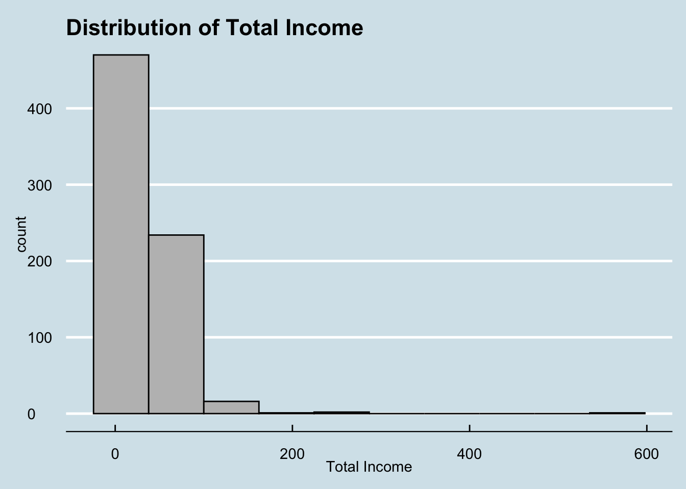
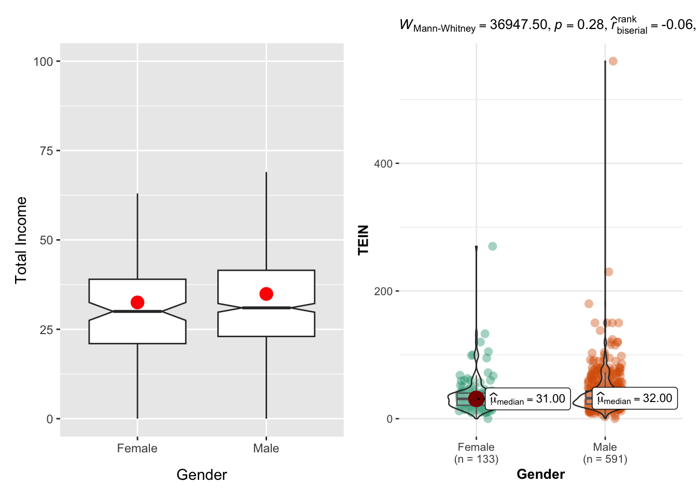
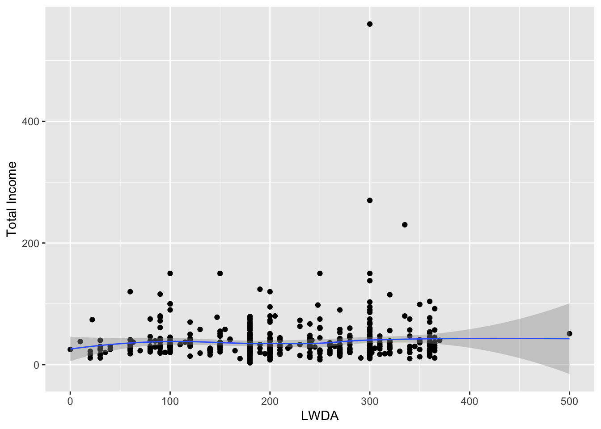
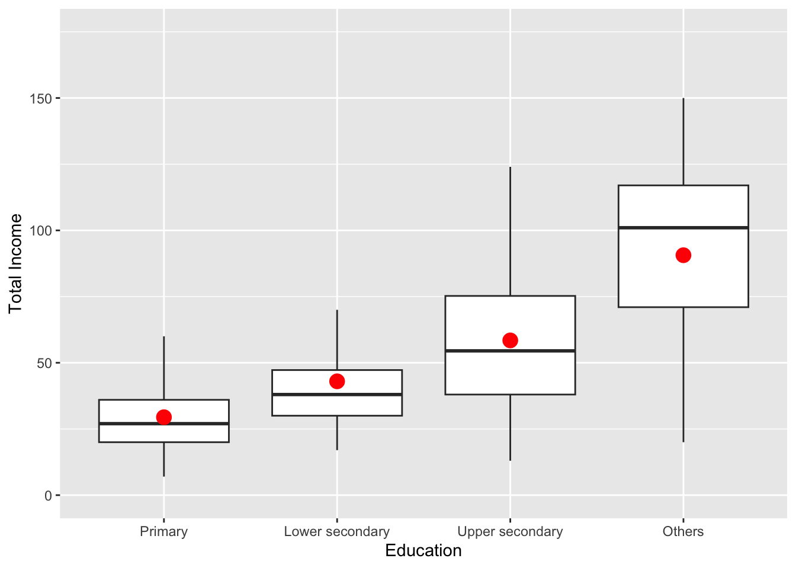
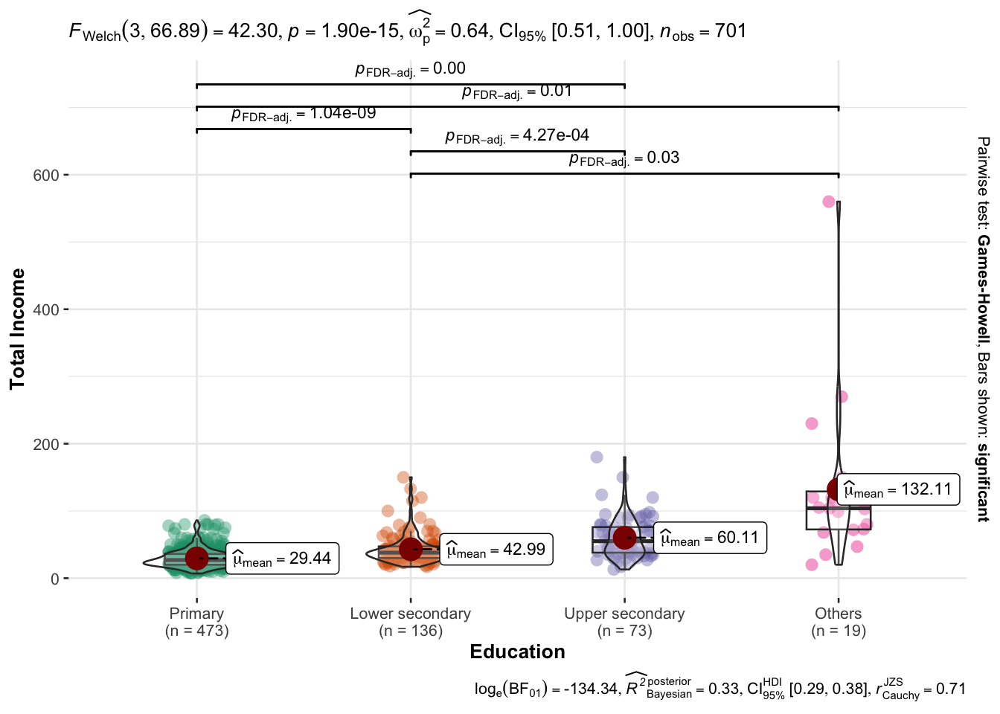
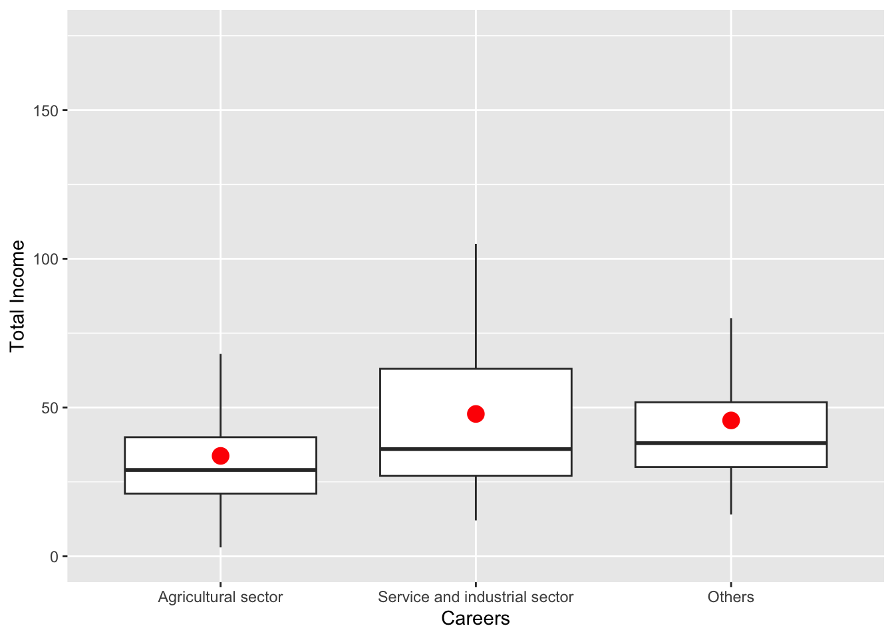
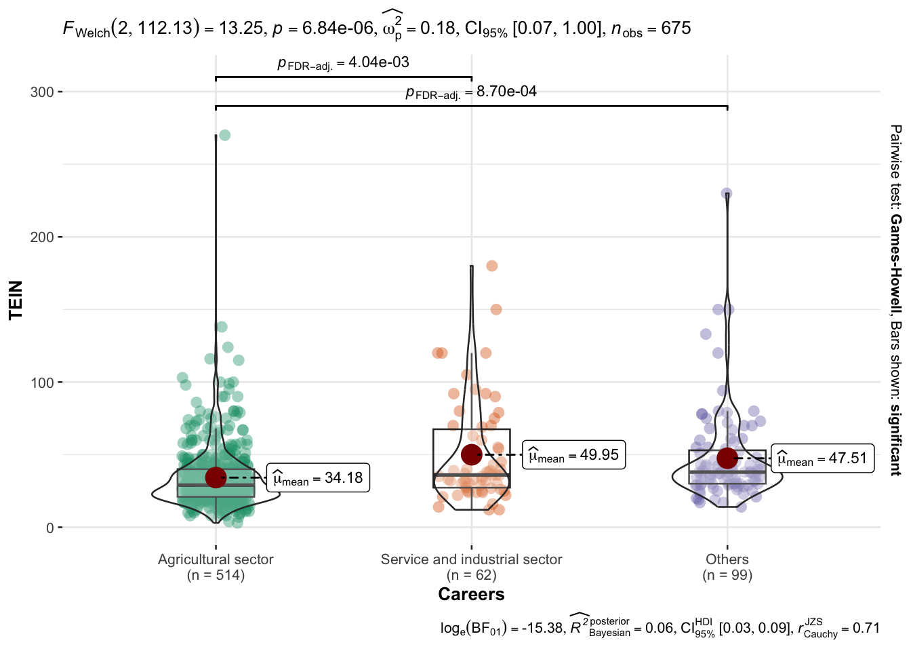
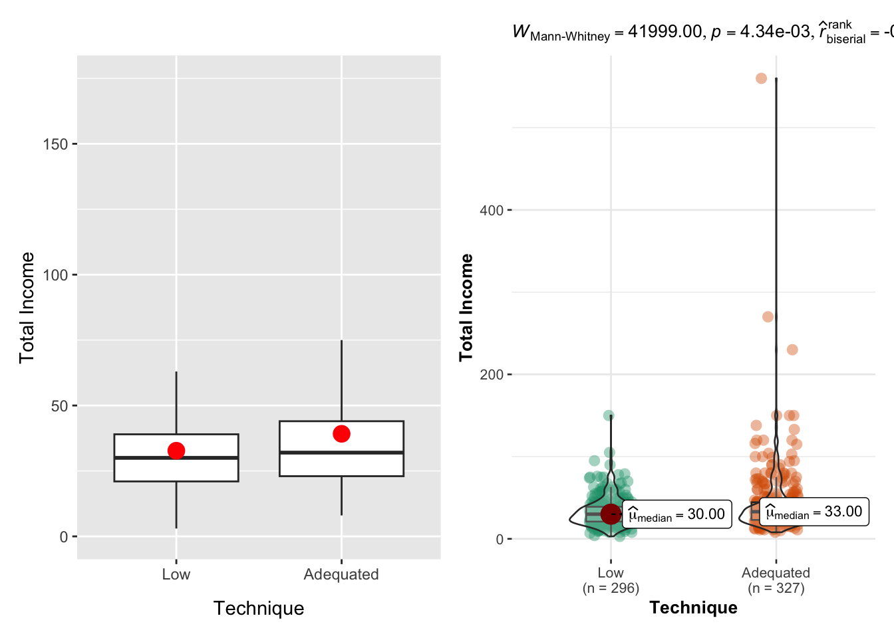

pacman::p_load(tidyverse, dplyr, ggthemes, ggstatsplot)Take-home_Ex01
Background
Income inequality among informal labourers remains a key challenge in rural areas, particularly in mountainous regions of Vietnam. Informal labourers often rely on unstable sources of income and have limited access to education, training, and financial resources. Understanding the factors associated with their income is important for improving rural livelihoods and supporting effective policy design.
The Dataset
This report uses a survey dataset on informal rural labourers from five northern mountainous provinces of Vietnam. The dataset includes 725 valid observations collected through face-to-face interviews. It provides information on total income as well as individual characteristics such as gender, education level, career sector, working days, and farming techniques.
Aim of the Report
The aim of this report is to examine the distribution of total income and to analyse how income differs across selected socio-economic factors. Data visualisation and statistical methods are applied to identify income patterns and assess whether observed differences between groups are statistically significant.
Data Analysis and Visualization
Getting started
Installing and loading the required libraries
Before starting the analysis, the required R packages are installed and loaded into the R environment.
Importing data
The code chunk below imports Upload for elsiver.csv into R environment by using read_csv()function of readr package.
data <- read_csv("data/Upload for elsiver.csv")Rows: 725 Columns: 30
── Column specification ────────────────────────────────────────────────────────
Delimiter: ","
chr (1): ARO4
dbl (29): CPRO, CGEN, CRAC, CJOB, CQUI, TEIN, TAIN, TSII, TOIN, FEDU, FVTP, ...
ℹ Use `spec()` to retrieve the full column specification for this data.
ℹ Specify the column types or set `show_col_types = FALSE` to quiet this message.Data Analysis Results
Distribution of Total Income
ggplot(data=data, aes(x = TEIN)) +
geom_histogram(bins=10,
boundary = 100,
color="black",
fill="grey") +
labs(x = "Total Income") +
ggtitle("Distribution of Total Income") +
theme_economist()Warning: Removed 1 row containing non-finite outside the scale range
(`stat_bin()`).
From the histogram, it can be observed that as total income increases, the frequency of individuals decreases. Most individuals are concentrated in the lower income range, indicating that the majority of people in the five provinces of Vietnam have relatively low income, while only a small proportion earn high income.
Total Income by Gender
Data Preparation
In this step, numeric gender codes are transformed into categorical (character) variables to improve interpretability. Specifically, the variable CGEN is recoded such that 1 represents “Male” and 2 represents “Female”. This transformation facilitates clearer presentation and interpretation in subsequent graphical and statistical analyses.
data_cgen <- data %>% mutate(Gender = case_when(CGEN == 1 ~ 'Male',
CGEN == 2 ~ 'Female'))Geom_Boxplot and Mean Comparison
geom_boxplot() displays continuous value list. It visualises five summary statistics (the median, two hinges and two whiskers), and all outliers individually. The code chunk below plots boxplots by using geom_boxplot(). Notches are used in box plots to help visually assess whether the medians of distributions differ. If the notches do not overlap, this is evidence that the medians are different. The code chunk below adds mean values as red dots by using stat_summary() function and overriding the default geom.
p1 <- ggplot(data=data_cgen,
aes(y = TEIN,
x = Gender)) +
geom_boxplot(outlier.shape = NA, notch=TRUE) +
stat_summary(geom = "point",
fun = "mean",
colour ="red",
size=4) +
ylim(0,100) +
labs(y = "Total Income")Two-sample mean test: ggbetweenstats()
In the code chunk below, ggbetweenstats() is used to build a visual for two-sample mean test of Total Income by gender.
p2 <- ggbetweenstats(
data = data_cgen,
x = Gender,
y = TEIN,
type = "np",
messages = FALSE
)Combining p1 + p2
p1 + p2Warning: Removed 21 rows containing non-finite outside the scale range
(`stat_boxplot()`).Warning: Removed 21 rows containing non-finite outside the scale range
(`stat_summary()`).
From the boxplot, we observe that the mean total income for males is slightly higher than that for females. Similarly, the violin plot indicates that the median income of males is marginally higher than that of females. However, the difference between male and female income distributions is small and does not appear to be statistically significant.
Relationship Between Working Days and Total Income
ggplot(data=data,
aes(x= LWDA,
y=TEIN)) +
geom_point() +
geom_smooth(size=0.5) +
labs(y = "Total Income")Warning: Using `size` aesthetic for lines was deprecated in ggplot2 3.4.0.
ℹ Please use `linewidth` instead.`geom_smooth()` using method = 'loess' and formula = 'y ~ x'Warning: Removed 160 rows containing non-finite outside the scale range
(`stat_smooth()`).Warning: Removed 160 rows containing missing values or values outside the scale range
(`geom_point()`).
From the scatter plot and the LOESS regression line, there is no clear relationship between working days and total income. Total income does not show an increasing trend as the number of working days increases, suggesting that longer working periods do not necessarily lead to higher income.
Total Income by Education Level
Data Preparation
In this section, the numeric codes representing education level are converted into categorical (character) variables to enhance clarity and interpretability. Specifically, the variable FEDU is recoded as “Primary”, “Lower secondary”, “Upper secondary”, and “Others”, allowing for meaningful comparison of total income across education levels.
data_fedu <- data %>% mutate(Education = case_when(FEDU == 0 ~ 'Primary',
FEDU == 1 ~ 'Lower secondary',
FEDU == 2 ~ 'Upper secondary',
FEDU == 3 ~ 'Others'))
data_fedu <- data_fedu %>% filter(!is.na(Education))
data_fedu$Education <- factor(data_fedu$Education, levels = c('Primary', 'Lower secondary', 'Upper secondary', 'Others'))Boxplot and Statistical Comparison
The code chunk below plots boxplots by using geom_boxplot().
ggplot(data=data_fedu,
aes(y = TEIN,
x = Education)) +
geom_boxplot(outlier.shape = NA) +
stat_summary(geom = "point",
fun = "mean",
colour ="red",
size=4) +
ylim(0,175) +
labs(y = "Total Income")Warning: Removed 5 rows containing non-finite outside the scale range
(`stat_boxplot()`).Warning: Removed 5 rows containing non-finite outside the scale range
(`stat_summary()`).
From the box plot, we can observe that as the education level increases, total income tends to increase. The mean and median of total income is noticeably higher at higher education levels, suggesting that education is positively associated with total income.
One-way ANOVA Test: ggbetweenstats() method
In the code chunk below, ggbetweenstats() is used to generate a visualization for a one-way ANOVA test on total income by education level, in order to examine whether there are statistically significant differences in total income across education groups.
ggbetweenstats(
data = data_fedu,
x = Education,
y = TEIN,
type = "p",
mean.ci = TRUE,
pairwise.comparisons = TRUE,
pairwise.display = "s",
p.adjust.method = "fdr",
messages = FALSE
) +
labs(y = "Total Income")
Based on the results from the one-way ANOVA using ggbetweenstats, there are statistically significant differences in total income across different levels of education. Pairwise comparisons indicate that education groups differ significantly from each other, with higher education levels associated with higher total income. Overall, the four education categories show significant differences in total income, and total income increases as the level of education increases.
Total Income by Career Sector
Data Preparation
In this step, the numeric career codes are recoded into categorical (character) variables to improve interpretability. Specifically, the variable CJOB is recoded as “Agricultural sector”, “Service and industrial sector”, and “Others”. Observations with missing career information are removed, and the resulting variable is converted into a factor with an ordered level structure to facilitate clear visualization and statistical comparison of total income across career sectors.
data_cjob <- data %>% mutate(Careers = case_when(CJOB == 1 ~ 'Agricultural sector',
CJOB == 2 ~ 'Service and industrial sector',
CJOB == 3 ~ 'Others'))
data_cjob <- data_cjob %>% filter(!is.na(CJOB))
data_cjob$Careers <- factor(data_cjob$Careers, levels = c('Agricultural sector', 'Service and industrial sector', 'Others'))Boxplot and Statistical Comparison
The code chunk below plots boxplots by using geom_boxplot().
ggplot(data=data_cjob,
aes(y = TEIN,
x = Careers)) +
geom_boxplot(outlier.shape = NA) +
stat_summary(geom = "point",
fun = "mean",
colour ="red",
size=4) +
ylim(0,175) +
labs(y = "Total Income")Warning: Removed 4 rows containing non-finite outside the scale range
(`stat_boxplot()`).Warning: Removed 4 rows containing non-finite outside the scale range
(`stat_summary()`).
The boxplot shows that total income differs across career sectors. Individuals in the agricultural sector have the lowest total income, and those in the service and industrial sector have moderately higher income. The “Others” category has slightly higher median (but lower mean) income than the service and industrial sector.
Oneway ANOVA Test: ggbetweenstats() method
In the code chunk below, ggbetweenstats() is used to generate a visualization for a one-way ANOVA test on total income by career sector, in order to examine whether there are statistically significant differences in total income across career sectors.
ggbetweenstats(
data = data_cjob,
x = Careers,
y = TEIN,
type = "p",
mean.ci = TRUE,
pairwise.comparisons = TRUE,
pairwise.display = "s",
p.adjust.method = "fdr",
messages = FALSE
)
The one-way ANOVA indicates that total income differs significantly across career sectors. Pairwise comparisons show that the difference in mean income between agricultural sector and service and industrial sector, as well as between agricultural sector and others are statistically significant, confirming that career sector has a measurable impact on total income.
Total Income by Technique
Data Preparation
The numeric variable FTAP is recoded into the categorical variable “Technique” with two levels (“Low” and “Adequate”), and missing values are removed to facilitate income comparison across farming techniques.
data_ftap <- data %>% mutate(Technique = case_when(FTAP == 1 ~ 'Low',
FTAP == 2 ~ 'Adequated'))
data_ftap <- data_ftap %>% filter(!is.na(FTAP))
data_ftap$Technique <- factor(data_ftap$Technique, levels = c('Low', 'Adequated'))Using geom_boxplot and ggbetweenstatsto compare total income by technique.
p1 <- ggplot(data=data_ftap,
aes(y = TEIN,
x = Technique)) +
geom_boxplot(outlier.shape = NA) +
stat_summary(geom = "point",
fun = "mean",
colour ="red",
size=4) +
ylim(0,175) +
labs(y = "Total Income")
p2 <- ggbetweenstats(
data = data_ftap,
x = Technique,
y = TEIN,
type = "np",
messages = FALSE
) +
labs(y = "Total Income")
p1 + p2Warning: Removed 3 rows containing non-finite outside the scale range
(`stat_boxplot()`).Warning: Removed 3 rows containing non-finite outside the scale range
(`stat_summary()`).
The boxplot shows that individuals using adequate techniques have slightly higher total income compared to those using low-level techniques. Both the median and mean total income are higher for the adequate technique group. However, the results from ggbetweenstats (nonparametric test) indicate that the difference in total income between the two technique groups is not statistically significant.
Conclusion
This study examined the distribution of total income and its relationship with several socio-economic factors in five provinces of Vietnam. The results show that total income is unevenly distributed, with most individuals concentrated in the lower income range. Gender differences in income are small and not statistically significant. Education level is positively associated with total income, with higher education levels corresponding to higher income, and these differences are statistically significant. Total income also differs across career sectors, with significant differences in mean income observed among sectors. In contrast, no clear relationship is found between working days and total income, and farming technique shows only slight differences in income that are not statistically significant. Overall, education and career sector appear to be more important determinants of total income than gender, working days, or farming technique.